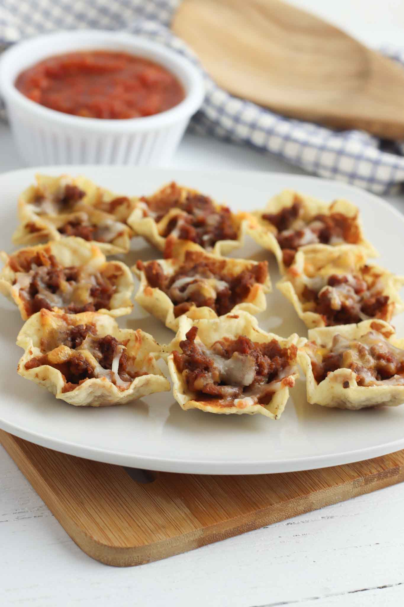

Tostitos Scoops Appetizer

Description
This Tostitos scoops appetizer is going to be a hit anywhere make it.
Pair with watching a sport!
Ingredients
- 1 lb. hamburger or ground chuck
- 1 16 oz. bag of Mexican shredded cheese
- 1 jar of medium salsa or salsa of your choise
Steps
- Preheat oven to 350 degrees. Cook hamburger until crumbled and brown. Add salsa and stir.
- Arrange scoops on foil lined cookie sheet.
- Scoop a spoonful of hamburger mixture into each scoop.
- Top with a generous amout of shredded cheese.
- Put in oven and cook for around 5-10 minutes, until cheese is melted.